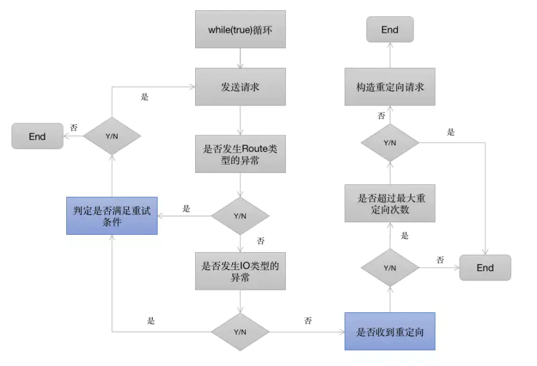

概述
在Android开发中可以使用HttpClient(被废弃)、HttpUrlConnection进行网络请求，而OkHttp是Square公司开源的针对Java和Android程序封装的一个高性能http请求库，所以它的职责跟HttpUrlConnection类似。本文直接参考 https://juejin.cn/post/6844904102669844493 解析。
基本使用
添加依赖：
1 | implementation("com.squareup.okhttp3:okhttp:4.9.0") |
使用：
1 | private val httpClient = OkHttpClient() |
整体流程

涉及到的几个核心类：
- OkHttpClient: OkHttp 的核心管理类，所有的内部逻辑和对象都由 OkHttpClient 统一来管理，它通过 Builder 构造器生成。
- Request 和 Response: 请求和相应类。
- RealCall: 负责请求的调度(同步 execute 由当前线程发送请求，异步 enqueue 则由 OkHttp 内部的线程池请求)，同时负责构造内部责任链并执行责任链相关的逻辑，直到获取结果。
execute() 和 enqueue() 方法分别用来处理同步和异步请求。而 enqueue() 方法其实只是通过异步线程和 callback 做了一个异步调用的封装，最终逻辑还是会调用到 getResponseWithInterceptorChain() 获得请求结果。
Dispatcher调度器
1 | // RealCall |
可以看到 enqueue 方法会将异步请求 AsyncCall 加入到一个队列中，然后通过 asyncCall.executeOn(executorService) 放到线程池中执行。其执行逻辑与 execute 同步方法一样，都会调用 getResponseWithInterceptorChain() 方法：
1 | // RealCall |
这里我们看一下 OkHttp 线程池的定义：
1 | ThreadPoolExecutor(0, Int.MAX_VALUE, 60, TimeUnit.SECONDS, SynchronousQueue(), threadFactory("$okHttpName Dispatcher", false)) |
根据上面的参数，可以知道 OkHttp 中的线程池会一直创建新的线程来执行任务，为了防止启动的线程数过多，OkHttp 自身通过 maxRequests 参数限制最大同时请求书，默认为 64。如果超过了这个限制，则不会再往 executableCalls 中添加异步Call，而会在每个 AsyncCall 执行完后都会调用 dispatcher.finished(this) 方法，该方法又会重新调用 promoteAndExecute() 添加待执行的任务，即将等待队列放入到执行队列中。
OkHttp拦截器
拦截器调用
无论是同步还是异步请求，最后都会调用 getResponseWithInterceptorChain() 方法获取响应：
1 | // RealCall |
这个方法的逻辑主要是生成一个 Interceptors 拦截器的责任链，然后创建了一个 RealInterceptorChain 类，并通过 chain.proceed 方法获取到最后的 Response。OkHttp 将整个请求的复杂逻辑切成了一个个独立模块并命名为拦截器(Interceptor)，通过责任链的设计模式串联到了一起，最终完成请求获取响应结果。
再看看 RealInterceptorChain.proceed() 的逻辑：
1 | override fun proceed(request: Request): Response { |
这里调用了当前拦截器的 intercept 方法，参数为根据剩余拦截器创建的 RealInterceptorChain 链。接下来看看相关接口：
1 | fun interface Interceptor { |
拦截器示意图(省略了部分拦截器)：

拦截器执行逻辑：
- 拦截器按照添加顺序依次执行；
- 拦截器的执行从 RealInterceptorChain.proceed() 开始，进入到第一个拦截器的执行逻辑；
- 每个拦截器在执行之前，会将剩余尚未执行的拦截器组成新的 RealInterceptorChain；
- 拦截器的逻辑被新的责任链调用 next.proceed() 切分为 start, next.proceed, end 这三个部分依次执行，在 end 部分能够拿到后面拦截器执行后的 Response 响应并做相应处理；
- next.proceed() 所代表的其实就是剩余所有拦截器的执行逻辑；
- 所有拦截器最终形成一个层层内嵌的嵌套结构。
看一下每个拦截器的作用：
- RetryAndFollowUpInterceptor: 失败和重定向拦截器；
- BridgeInterceptor: 封装 request 和 response 拦截器；
- CacheInterceptor: 缓存相关的拦截器，负责读取缓存直接返回、更新缓存；
- ConnectInterceptor: 连接服务，负责和服务器建立连接，这里才是真正的请求网络；
- CallServerInterceptor: 执行流操作(写出请求体、获得响应数据)，负责向服务器发送请求数据、从服务器读取响应数据，进行http请求报文的封装与请求报文的解析。
RetryAndFollowUpInterceptor
其 intercept 方法逻辑如下：

RetryAndFollowUpInterceptor 开启了一个 while 循环，并在循环内部完成两个重要的判定，如图中的蓝色方框：
- 当请求内部抛出异常时，判定是否需要重试
- 当响应结果是3xx重定向时，构建新的请求并发送请求
Interceptors和NetworkInterceptors
可以通过 addInterceptor 和 addNetworkdInterceptor 方法添加自定义的拦截器。从前面 RealCall 中添加拦截器的顺序可以知道 Interceptors 和 NetworkInterceptors 刚好一个在 RetryAndFollowUpInterceptor 的前面，一个在后面。
结合前面的责任链调用图可以分析出来，假如一个请求在 RetryAndFollowUpInterceptor 这个拦截器内部重试或者重定向了 N 次，那么其内部嵌套的所有拦截器也会被调用N次，同样 NetworkInterceptors 自定义的拦截器也会被调用 N 次。而相对的 Interceptors 则一个请求只会调用一次，所以在 OkHttp 的内部也将其称之为 Application Interceptor。
BridgeInterceptor
BridgeInterceptor 拦截器的功能如下：
- 应用层和网络层的桥接拦截器；
- 添加固定的header，比如Host、Content-Length、Content-Type、User-Agent等等。
- 设置gzip压缩，并在接收到内容后进行解压。省去了应用层处理数据解压的麻烦；
- 添加cookie，保存响应结果的cookie；
CacheInterceptor
强制缓存
网络请求响应header标识了Expires或Cache-Control带了max-age信息，而此时客户端计算缓存并未过期，则可以直接使用本地缓存内容，而不用真正的发起一次网络请求。
协商缓存
强制缓存最大的问题是，一旦服务端资源有更新，直到缓存时间截止前，客户端无法获取到最新的资源。
- 服务端响应头添加Last-Modify头标识资源的最后修改时间，单位为秒，当客户端再次发起请求时添加If-Modify-Since头并赋值为上次请求拿到的Last-Modify头的值。服务端收到请求后自行判断缓存资源是否仍然有效，如果有效则返回状态码304同时body体为空，否则下发最新的资源数据。客户端如果发现状态码是304，则取出本地的缓存数据作为响应。问题：某些文件在一秒内被修改则并不能准确的标识修改时间。资源修改时间并不能作为资源是否修改的唯一依据，比如资源文件是Daily Build的，每天都会生成新的，但是其实际内容可能并未改变。
- HTTP 还提供了另外一组头信息来处理缓存，ETag/If-None-Match。流程与Last-Modify一样，只是把服务端响应的头变成Last-Modify，客户端发出的头变成If-None-Match。ETag是资源的唯一标识符，服务端资源变化一定会导致ETag变化。具体的生成方式有服务端控制，场景的影响因素包括，文件最终修改时间、文件大小、文件编号等等。
OkHttp 通过 CacheInterceptor 来处理缓存相关的逻辑，OKHttp 默认只支持 get 请求的缓存，像 post 这种请求，缓存的意义不大。在使用时可以通过两方面来设置缓存：
- 在OkHttpClient中设置缓存的路径和缓存(DiskLruCache)的大小:
new OkHttpClient.Builder().cache(Cache cache)。 - 在Request中设置缓存条件(Cache-Control):
new Request.Builder().cacheControl(CacheControl cacheControl)。
OkHttp 默认没有上述设置，如需要使用缓存，需要我们自己添加配置。OkHttp 中通过 CacheStrategy 来设置缓存策略，CacheInterceptor 中缓存策略的生成与 Request 和缓存的 Response 有关。在CacheStrategy中影响到缓存策略的因素有：
- Request 中 HTTP 和 Cache 条件。
- 缓存 Response 中 code 和 headers 中的头部字段。
最终会得到 CacheStrategy 的两个成员变量 networkRequest 和 cacheResponse。接下来看看缓存拦截器的源码：
1 | class CacheInterceptor(internal val cache: Cache?) : Interceptor { |
总结一下缓存拦截器的逻辑：
- 如果用户没有设置 Cache 则不会使用缓存，且返回的网络 Response 也不会被缓存起来。
- 如果用户设置了 Cache, 则在进行网络请求前会根据当前时间, Request 中的字段以及之前缓存的 Response 生成一个缓存策略，策略中包括 networkRequest(为空表示不使用网络) 和 cacheResponse(缓存的响应)。
- 如果缓存无效则关闭资源，接着往下走。
- 如果禁止使用网络且 cacheResponse 为空则返回 504。
- 如果禁止网络且存在有效的 cacheResponse 则直接返回缓存的响应。
- 否则调用剩下的拦截器逻辑进行网络请求，拿到网络响应 networkResponse。
- 如果之前存在缓存 cacheResponse 则根据 networkResponse 更新缓存。
- 如果设置过缓存且策略支持缓存，则将响应缓存起来。
ConnectInterceptor
ConnectInterceptor 连接拦截器，内部会维护一个连接池，负责连接复用、创建连接（三次握手等等）、释放连接。
最终建立 Socket 连接是通过 ExchangeFinder.findConnection() 方法来完成的。这个方法的逻辑如下：
- 检查当前 ExchangeFinder 所保存的 Connection 是否满足此次请求；
- 检查当前连接池 ConnectionPool 中是否有满足此次请求的 Connection；
- 检查当前 RouteSelector 列表中，是否还有可用Route(Route 是 proxy, IP 地址的包装类)，如果没有就发起DNS请求；
- 通过 DNS 获取到新的 Route 之后，第二次从 ConnectionPool 查找有无可复用的 Connection，否则就创建新的 RealConnection；
- 用 RealConnection 进行 TCP 和 TLS 连接，连接成功后保存到 ConnectionPool 中。
关于连接池的相关问题：
- 连接池是为了解决频繁的进行建立Sokcet连接（TCP三次握手）和断开Socket（TCP四次分手）设计的。
- 连接池实现的类是 RealConnectionPool，它负责存储与清除的工作，存储通过双端队列存储，删除交给了线程池处理。
- 在每次创建 RealConnection 或从连接池中拿一次 RealConnection 都会给 RealConnection 的 transmitters 集合添加一个弱引用的 transmitter 对象，添加它主要是为了后面判断该连接是否在使用中。
- 在连接池中找连接的时候会对比连接池中相同 host 的连接。如果在连接池中找不到连接的话，会创建连接，创建完后会存储到连接池中。
- 在把连接放入连接池中时，会把清除操作的任务放入到线程池中执行，删除任务中会判断当前连接有没有在使用中，有没有正在使用通过 RealConnection 的 transmitters 集合的 size 是否为 0 来判断，如果不在使用中，找出空闲时间最长的连接，如果空闲时间最长的连接超过了 keep-alive 时长或者空闲的连接数超过了设置的连接数，则会把存活时间最长的连接从连接池中删除。
在执行完 ConnectInterceptor 之后，按照顺序执行的规定，所有的 NetworkInterceptor 会开始执行，此时 Socket 连接已经建立了，可以通过 realChain 拿到 Socket 做一些自定义操作，这也就是为什么称之为 NetworkInterceptor 的原因。
CallServerInterceptor
CallServerInterceptor 负责传输 Http 头和 Body 数据。
总结
okhttp运用的设计模式：
构造者模式(OkhttpClient, Request 等各种对象的创建)
工厂模式(在Call接口中，有一个内部工厂Factory接口)
1
2
3fun interface Factory {
fun newCall(request: Request): Call
}单例模式
策略模式(缓存策略)
责任链模式(拦截器的链式调用)
享元模式(线程池和连接池)